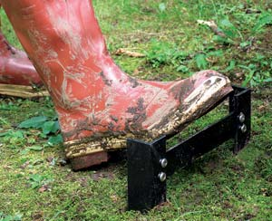

Gardens and pastures can be messy places to work, especially after a good rain. And it can be a challenge to eliminate that muck and mud from your boots. Enter the boot scraper. Placed by the back porch, pasture gate or barn door, these handy devices will make quick work of the wet stuff on your Wellingtons.
I make my mud scrapers from scrap angle iron. One abundant and often free source is old bed frames. My design, shown below, consists of two angle-iron legs, 1½ inches wide by 15 inches long, and one bar-stock cross piece, 1½ inches wide by 9 5/8 inches long. All of the metal is three-sixteenth inches thick. Bed-frame stock is often less than an eighth inch, but it works quite well.
The mild steel can be trimmed using any of several means - a chop saw, angle grinder with cut-off wheel, cutting torch or hacksaw. The legs can be cut to stake like points by making 45-degree cuts on each face, or left square. Depending on your soil, you may be able to pound the boot scraper straight into the ground or you may need to dig a hole first and backfill.
The scraping blade may either be bolted or welded in place. Given the design’s simplicity, it makes an ideal first project for a novice welder. The scraper shown here uses four round-head machine screws, two at each end, to mount the crossbar. The screws are rustproof stainless steel, one-quarter inch diameter and three-quarters inch long, with matching flat washers, lock washers (optional) and hex nuts. I like to give the top of the blade a few licks with a file to create a slightly sharp, square edge. To forestall rust, apply quality exterior enamel.
Place the scrapers where they won’t be tripped over by people or animals, or run over by machinery. I like to tuck them close to a house wall, stair railing or fence post, all of which offer a place to lean an arm for balance as you scrape.
|
 RAJ CHAUDHRY Keep the mud outdoors! You can make this handy boot scraper by welding or bolting together three pieces of angle iron. |
|
|